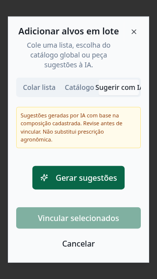
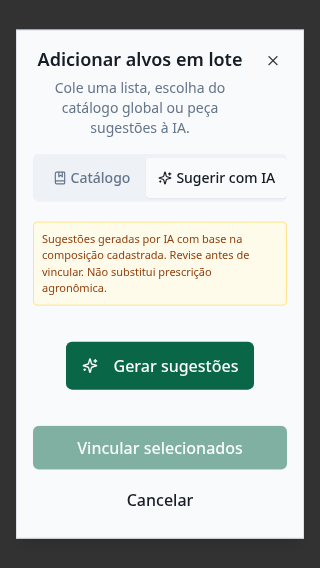
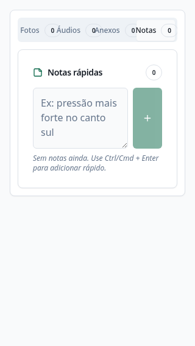
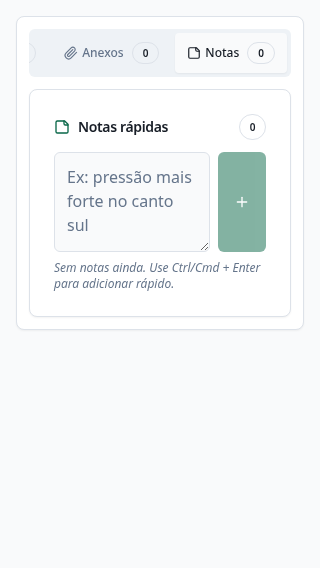
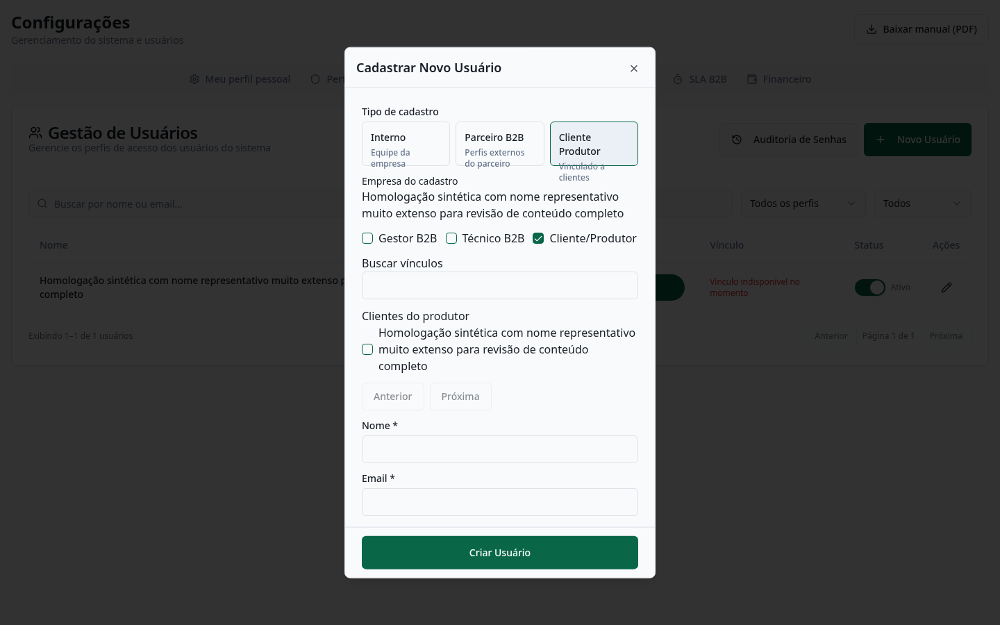
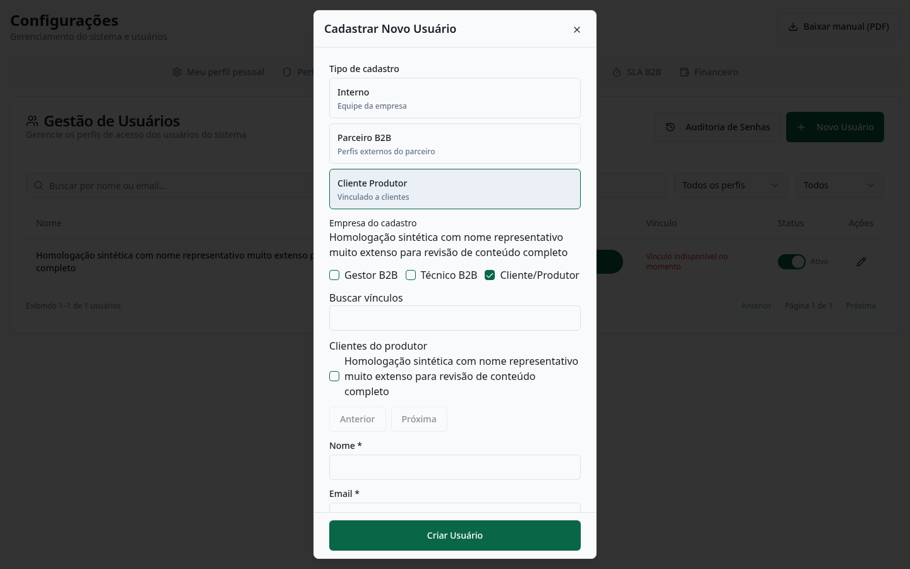
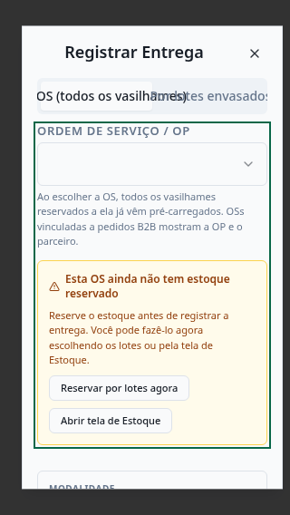
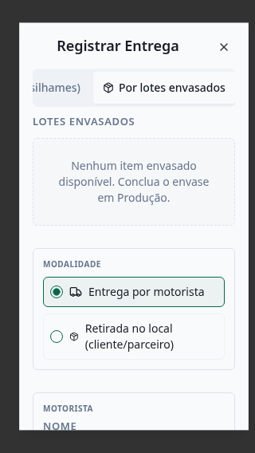

Revisão responsiva — 116 ocorrências
Evidência local sintética. Montagem isolada e navegação real são distintas; lacunas não significam aprovação.
Abrir matriz completa · Relatório e limitesAlvos em lote


Evidências da visita


Novo usuário


Registro de entrega

